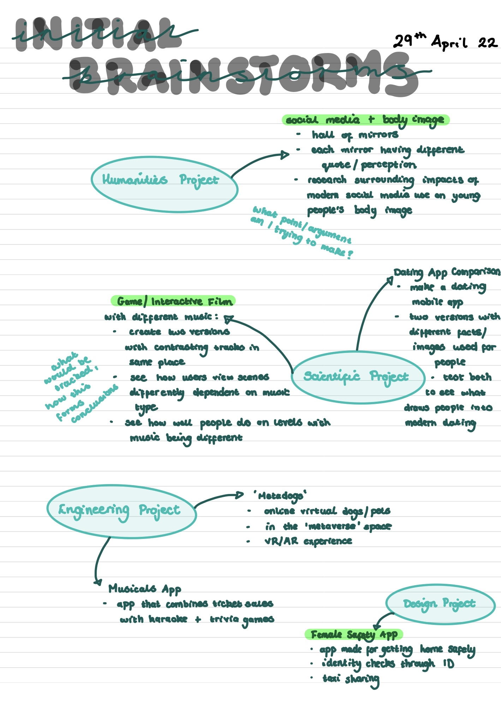
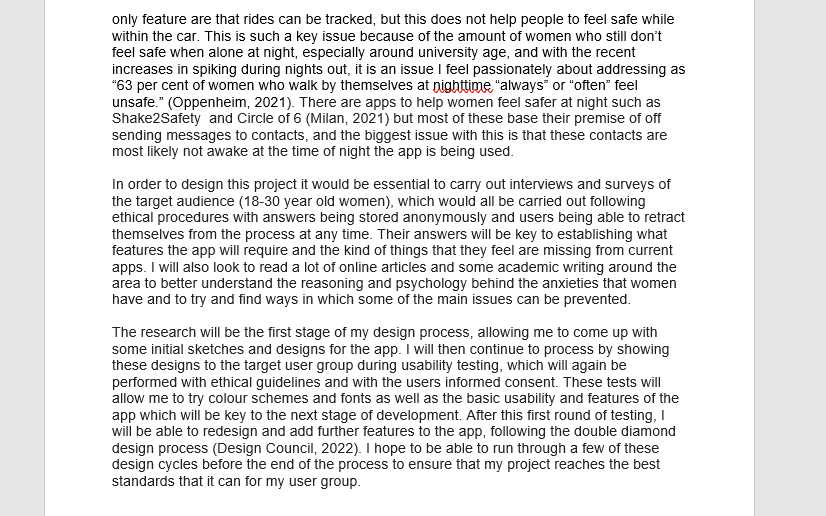
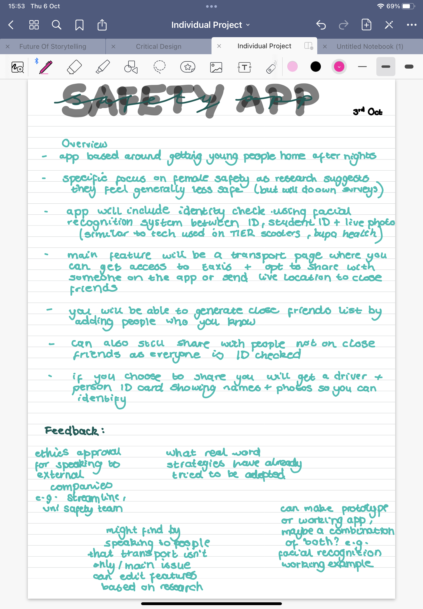

Female Safety App
Now I am in my third year at university we are tasked with creating an individual project throughout the whole year. This process started in the final term of second year where we had a short module outlining the different project types and what we would need to do in order to match the different marking criteria. I did some initial brainstorming and research after hearing about these different types and then chose three top ideas which I thought could work best.


After these brainstorms, I did some further research over the summer and decided on which idea I thought I could do the most with. I decided on my Safety App design project as I really liked the concept and after deciding a career in UX Design is something that I was most interested in, thought this project would demonstrate my skills best.


Now that I have arrived back at University for my final year we have started to delve into our ideas in more detail and receive some feedback. The features of my app along with it's colours, logo, name and more will all develop during the design process which is a key part of the marking for this project. I wanted to opt for this type of project so that I can further develop my design skills and come out with a piece of design work that I am really proud of.

MORE INFORMATION WILL BE COMING AS THE PROJECT DEVELOPS.